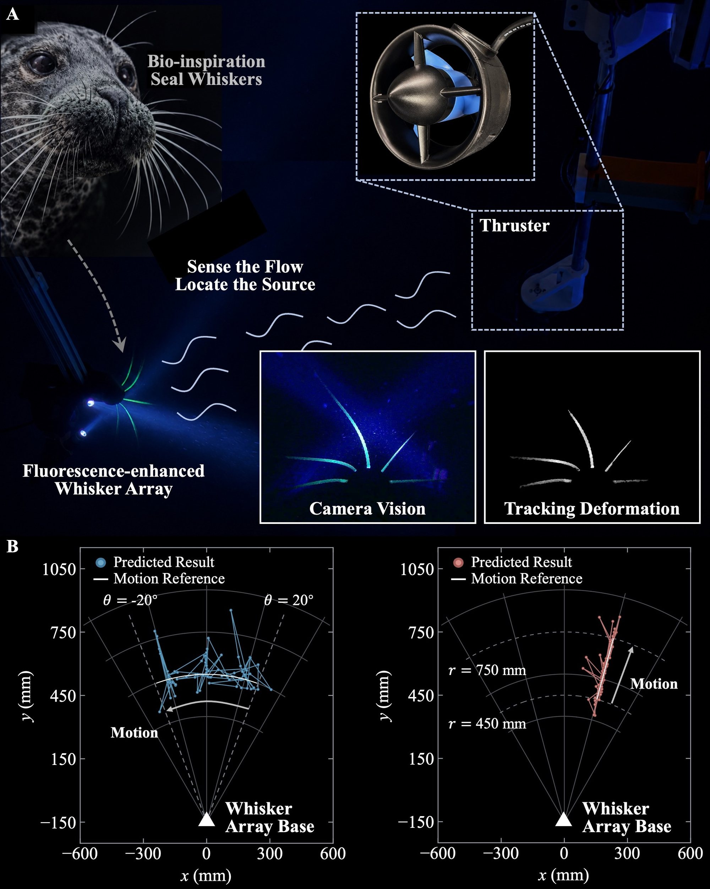
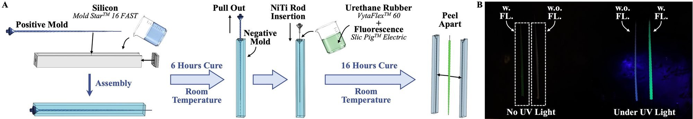
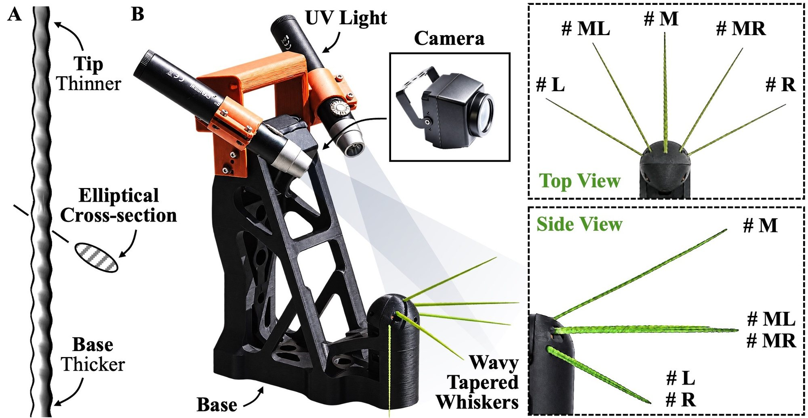
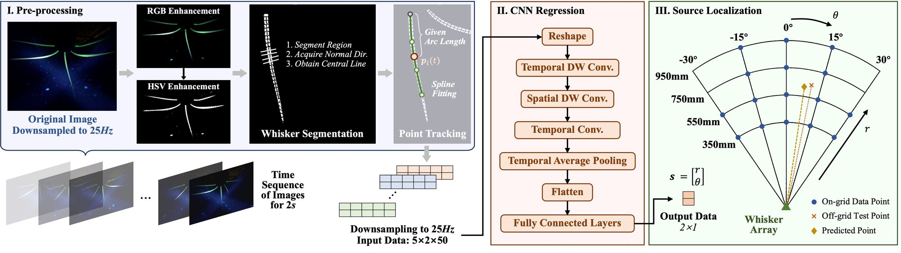
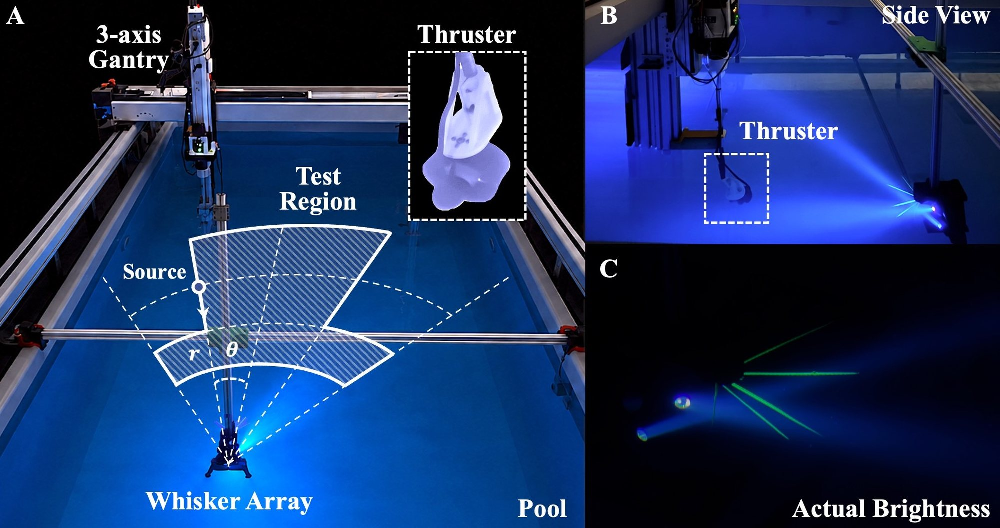
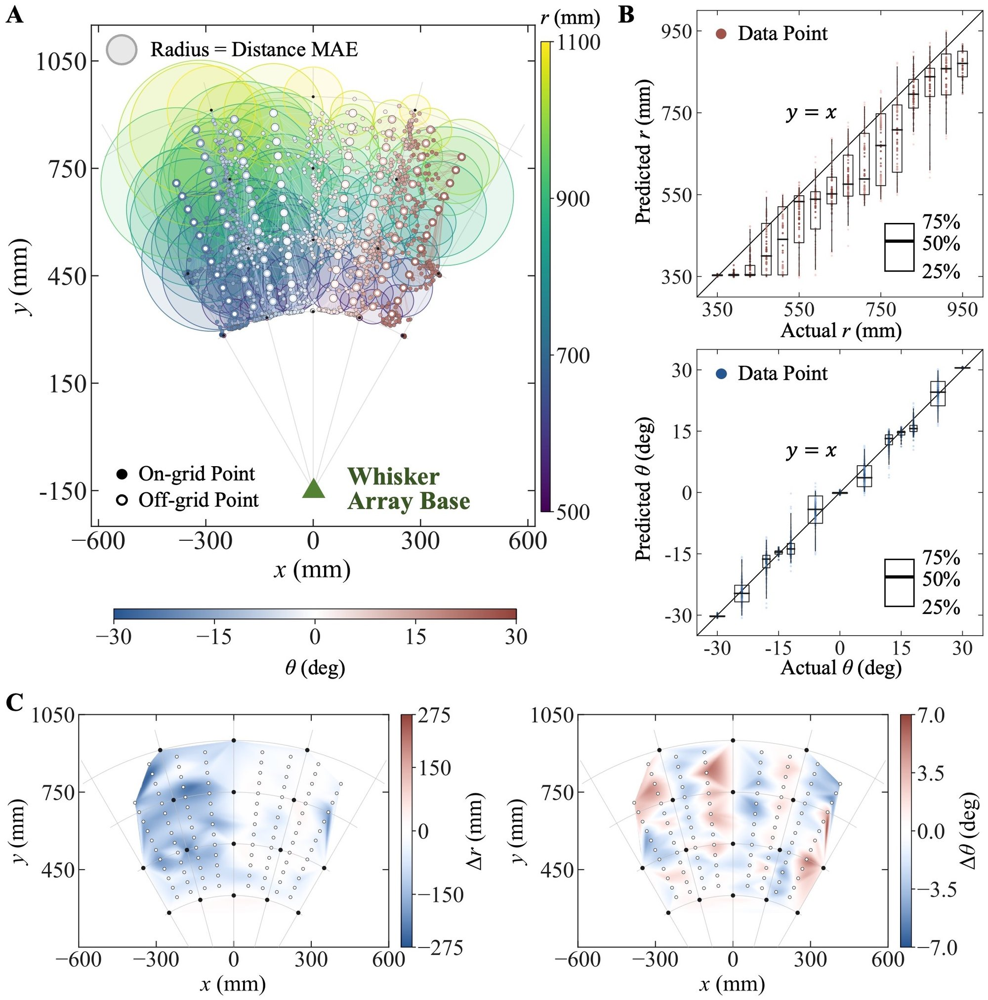
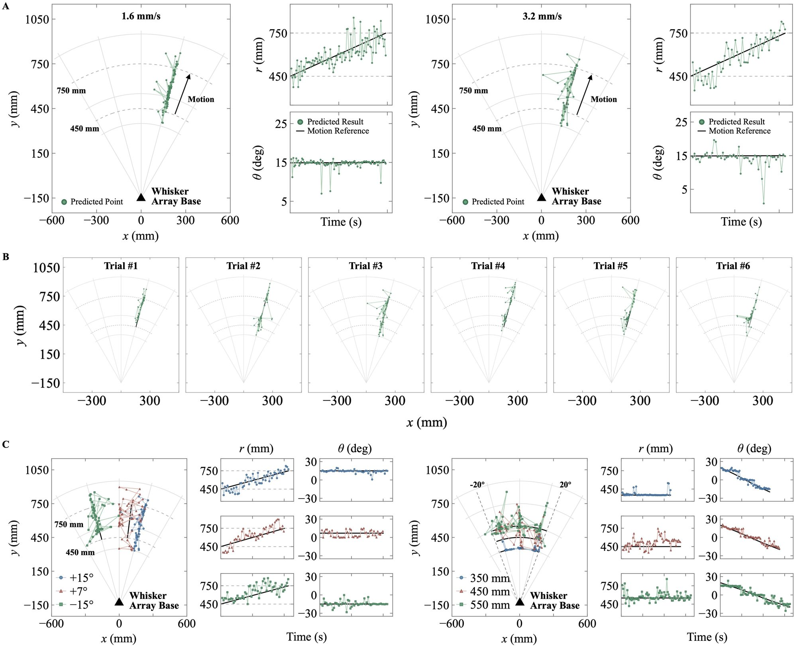
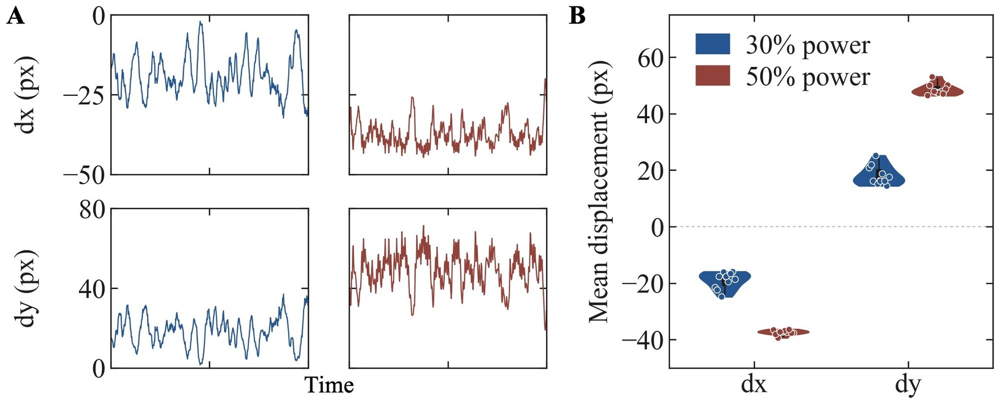

Locating an underwater source
from the flow it creates.
Five fluorescent whiskers glow under low-power UV light. A single camera watches them bend, and a lightweight network turns two seconds of deformation into a source position.
System overview figure Biological inspiration, platform, and localization


Reading flow in the dark
How can a camera see a whisker with so little light?
Harbor seals follow hydrodynamic trails with their whiskers. Our artificial whisker borrows the same undulating, tapered shape, which suppresses the self-excited vortex oscillations a plain cylinder would show in flow, so what bends it is the flow from the source.
Each whisker is a 0.4 mm superelastic nitinol core inside a urethane shell with 5 wt% green fluorescent pigment, cast in a two-stage molding process. Without UV, a fluorescent whisker looks like any other. Under UV, it stands out sharply against the dark water, which is what lets the illumination stay at roughly 100 mW per light.


One camera, five orientations
The platform is a 1080p, 60 Hz camera, two 365 nm UV lights on either side of it, and five whiskers mounted at different pitch and yaw angles. A single view cannot recover the full 3D bending of one whisker, but because the whiskers point in different directions, a deformation that is hard to see on one is pronounced on another.


From whisker motion to source position
What can five bending whiskers tell us?
Each frame is enhanced to isolate the green fluorescence, the five whiskers are segmented, and a point at a fixed arc length along each spline centerline is tracked. Two seconds of these displacements (5 whiskers × 2 axes × 50 samples) go into a lightweight CNN that outputs the source position (r, θ).


Where is the source?
Testing beyond the positions seen during training.
A thruster on a three-axis gantry is moved over a fan-shaped region 350–950 mm from the array and ±30° around its axis, always facing the array at the same power. Training uses 16 grid positions (8,640 two-second samples over two days); the test set adds 108 off-grid positions the model has never seen.


Across 16 on-grid and 108 off-grid test positions.
| Test points | Δr MAE (mm) | Δθ MAE (°) | Distance MAE (mm) |
|---|---|---|---|
| 16 on-grid | 45.2 | 0.47 | 47.2 |
| 108 off-grid | 77.7 | 2.78 | 94.2 |
| All | 73.5 | 2.48 | 88.1 |
Bearing is learned better than range: angular estimates stay tight everywhere, while off-grid range estimates are pulled toward the nearest training radius. The mapping still interpolates, with off-grid predictions clustering around their true locations.
Explore the localization results Predictions, error distributions, and spatial maps


Following different trajectories
Does the estimate follow different paths?
The model is trained only on stationary sources. The arc-motion trials above test it at radii of 350, 450, and 550 mm, with the largest errors on off-grid paths.
In a separate radial-motion experiment, the thruster moves from 450 to 750 mm at 1.6 mm/s. The estimate follows it with 51.7 mm range error and 0.63° angular error; six repeated runs show the same trend. The full results below include both radial and arc trajectories.
Explore the moving-source results Speeds, repeatability, and trajectories


Limitations and next steps
Localization is planar: the thruster sits at the array's height, faces it, and runs at a fixed power. A first look at source strength shows that a stronger thruster gives a larger and steadier whisker response. Next: flow visualization around the array, a higher frame rate for frequency cues, more source types, and integration on an underwater vehicle.
How does source strength affect the response? Whisker displacement at two power levels


Paper & authors
Abstract
Deep-water biological observation is essential for understanding marine organisms and their interactions with the environment. However, conventional optical and acoustic approaches can introduce stimuli that alter animal behavior and bias biological observations. This paper proposes a fluorescence-enhanced whisker array sensing system that pinpoints underwater hydrodynamic sources through local optical readout rather than direct source imaging. Five spatially oriented whiskers, fabricated with nitinol cores and fluorescent urethane shells, are integrated with ultraviolet excitation and a monocular camera. Image enhancement and segmentation are applied to track the whisker deformation. Further, a lightweight convolutional neural network captures temporal and cross-whisker features from 2 s sequences to estimate source localization. Pool experiments achieve a mean spatial localization error of 88 mm, with 73.5 mm in radius and 2.5° in angle, across a test region of 600 mm with ±30°. Real-time localization of a moving thruster further demonstrates the capability of the proposed method in dynamic scenarios, highlighting its potential for integration into underwater robots for hydrodynamic source detection, localization, and tracking in low-light environments.
Questions about the paper or the whiskers: Xiaochi Xie.
Questions & answers
Why fluorescence instead of a brighter light?
The goal is to observe without disturbing. Fluorescent pigment makes the whisker the brightest thing in the frame under a low-power UV source, so the camera gets clean contrast at about 100 mW per light. A conventional light bright enough to track a plain whisker would flood the surroundings.
Why one camera instead of a sensor on every whisker?
Per-whisker sensors need wiring, calibration and synchronization, and the system grows with every whisker added. A shared camera reads all five at once, and the whiskers point in different directions on purpose, so the single view captures deformation that any one whisker would hide.
Why is bearing easier to estimate than range?
Changing the source angle changes which whiskers bend and how, which the model picks up easily. Changing range mostly scales the same pattern, a weaker cue, so off-grid ranges drift toward the nearest training radius.
Does it work while the source is moving?
Yes, within limits. The model sees only stationary sources during training, yet it follows radial and arc trajectories in real time using 2 s windows. Faster motion increases the error, so continuous tracking will benefit from training data collected along trajectories.
What are the main limitations?
The experiments are planar, with a single source type at fixed power, facing the array. Height, heading and strength are not yet estimated, and the pool boundary introduces a mild left–right asymmetry in error.
Full technical video
The complete walkthrough, from sensing hardware to localization experiments.